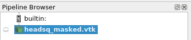
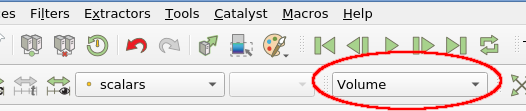
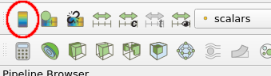
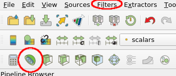
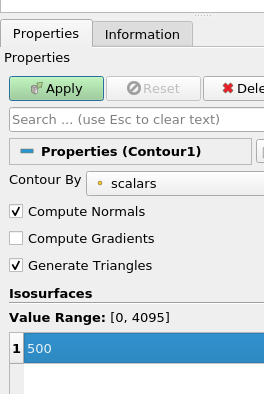
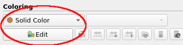
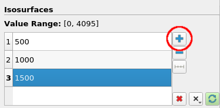
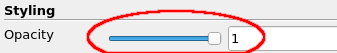

Exercise 1 - CT scan of a boy¶
First steps¶
In the first exercise we are going to take a look at a CT scan of a boy's head. A CT scanner produces a set of two dimensional X-ray images (usually called slices) that together form a 3D volume when stacked on top of each other. The 3D volume created in this way contains a density value for each voxel of the area scanned. As each part of the body (bone, tissue, blood, etc) has a different density w.r.t. X-rays these parts can be isolated and visualized using the density values.
The boy in this CT scan was sent to the hospital for a reason, and as part of the exercise you are encouraged to use ParaView to investigate and visualize the data set, to see if you can find out why he was in hospital.
▶ To begin, start the ParaView application. How to start ParaView depends on where you installed the binaries after downloading them.
▶ Once ParaView has opened, you have to load the first data file. To do this, you can use the open file icon in the toolbar, or File → Open in the menu. Navigate to directory where you put the data, select the headsq_masked.vtk file and open it.
The pipeline shown in the Pipeline browser in the upper-left corner of the ParaView window should now show the loaded data file:

▶ Next we want to apply the changes to this pipeline (i.e. the actual loading of the data), by pressing Apply in the Properties tab, directly below the pipeline browser.
Lazy pipeline update
Remember that every time that you make changes to the pipeline or a filter's parameters, you have to "Apply" to make the pipeline execute. The reason for this is that a pipeline update can take quite some time, depending on the data size and operation. So you should be able to make several changes first before triggering a pipeline update manually.
▶ Now we want to have a quick look at the data. By default, newly loaded items are made visible in the current view area on the right, and in the pipeline browser on the left you should see a small eye icon next to the headsq_masked.vtk object. By toggling the eye you can toggle visibility, a useful feature to control what elements you want to see.
▶ Another handy thing to check is the metadata in the Information tab, directly below the pipeline browser. It shows you the type of the dataset, the number of points and cells, data ranges, spatial extent, etc.
▶ Try to get a bit of a feel for the mouse interaction in the 3D view (LMB = rotate, MMB = drag, RMB = zoom).
Right now, your data is visible only as an outline: a box made from a few white lines representing the spatial extent of your data. This does not give us much insight in the data, so we want to switch to something more suitable for the moment.
▶ Use the visualization drop down menu in the toolbar to make a quick change to the visualization type. You can play around with the different representations available, with Slice and Volume being good ones for this type of data. When using Slice representation the slice direction and position can be controlled using the Slicing settings in the Properties tab (the latter is directly below the pipeline browser on the left).

Volume representation 'Are you sure?'
When enabling Volume representation a dialog box may pop up asking if you are sure. For large datasets volume rendering can be problematic if your system doesn't have a lot of memory and/or has a slow GPU. For the datasets used here volume rendering on most systems should not be a problem.
Especially in Volume representation you can clearly see that indeed we are looking at the scan of a (boy's) head.
▶ Switch to Slice representation and enable display of the color legend with either the Show button under Coloring in the properties, or using the Toggle Color Legend Button:

You should now see a color scale in the view area that shows how scalar values in the data are mapped to colors.
Isosurfacing¶
Our next job is to see what this dataset contains. To be more precise, we want to explore certain features of the dataset in order to look for things out of the ordinary. For example, we are interested in physical structures such as bone and skin.
▶ To do this, we first need to add a Contour filter to the pipeline: select the data source (headsq_masked.vtk) in the pipeline browser and add a Contour filter. You can do this by either using the icon symbol in the toolbar (half a sphere) or use Filters → Common → Contour in the menu bar:

▶ Next, we want to see what this filter does: in the Properties tab, set the value of the contour under Isosurfaces to 500 and click on Apply and you should see a surface more-or-less representing the boy's skin.

▶ To get an even better view we can hide the slice view by clicking on the relevant eye icon in the pipeline browser. You should now see the contour surface by itself.
Another thing you might want to do is play with the color settings. For example setting the color of the contour surface to something more skin-like than gray might be an improvement.
▶ To alter the color click select Solid Color under Coloring (directly below the isosurface value settings), click the Edit button and select the color:

Next we want to add some more contour surfaces representing certain features in this dataset, such as bone. To do this, we want to add a few more iso-surfaces to our contour plot.
▶ Use the add value button (the +) of the Contour filter's Isosurfaces section, fill in some extra values and hit Apply when done.

Hint
Try, for example, isovalues 1650 and 2750.
Note that although we now have multiple surfaces, one for each scalar value, they all have the same color, making them hard to distinguish. We can assign a separate color for each scalar value to overcome this.
▶ Under Coloring change the coloring mode to Scalars. Check the color scalar against the color of the surfaces shown.
Transparency¶
▶ The surfaces are now a bit easier to comprehend, although you might have to search a bit for the surface for the highest scalar value (check the color scale what color it should be).
We can improve things even further by using a bit of transparency.
▶ Set Opacity to a lower value, for example, 0.3:

▶ Finally, play a bit around with the viewpoint and inspect the visualization closely, and you should be able see why this boy was in hospital...